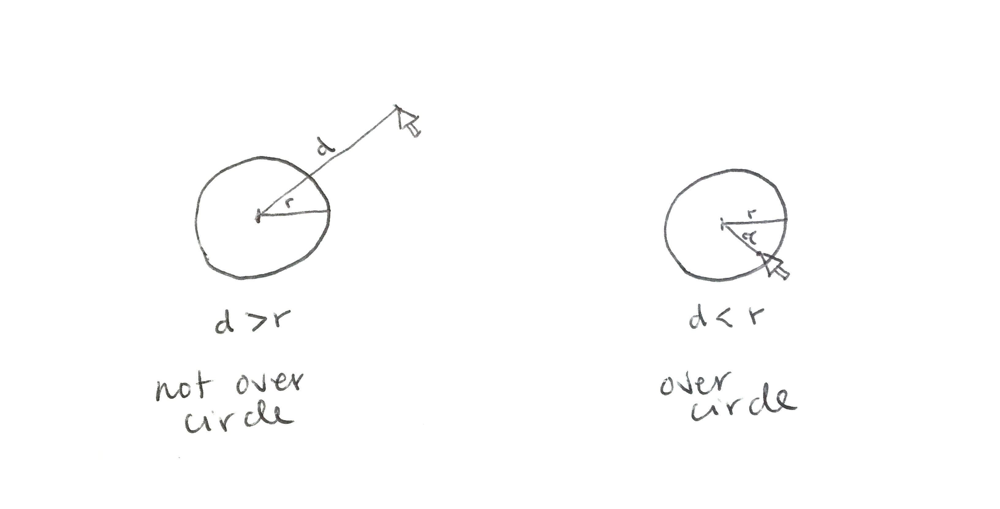

Overview
In this learning activity we will add functions to our bubbles. First we will have them check whether they have been clicked on, and then whether they are overlapping other other bubbles (first just one, then any other bubble).
Overview
In this learning activity we will add functions to our bubbles. First we will have them check whether they have been clicked on, and then whether they are overlapping other other bubbles (first just one, then any other bubble).
Instructions
Our goal is to have our bubbles paint themselves pink if they have been clicked on. To do so, we will add a function that checks whether the distance from the mouse to the center of the bubble is lesser than its radius:
Take a look at the code: it calculates the distance between the mouse pointer and the position of the bubble: if it is lesser than its radius (24), the color is changed to pink (255, 0, 200).
function Bubble(x, y) {
this.x = x;
this.y = y;
this.col = color(255, 100);
this.display = function() {
stroke(255);
fill(this.col);
ellipse(this.x, this.y, 48, 48);
}
this.move = function() {
this.x = this.x + random(-1, 1);
this.y = this.y + random(-1, 1);
}
this.clicked = function() {
var d = dist(mouseX, mouseY, this.x, this.y);
if (d < 24) {
this.col = color(255, 0, 200);
}
}
}This is exactly what we did in LA 2.2, step 2 ("is the mouse over a circle"). The difference is that now we are putting the code inside the clicked function, and the clicked function inside of the bubble object. This allows us to go over our array of bubbles, and have each bubble check whether the user has clicked on it ––look at lines 17 to 21 :